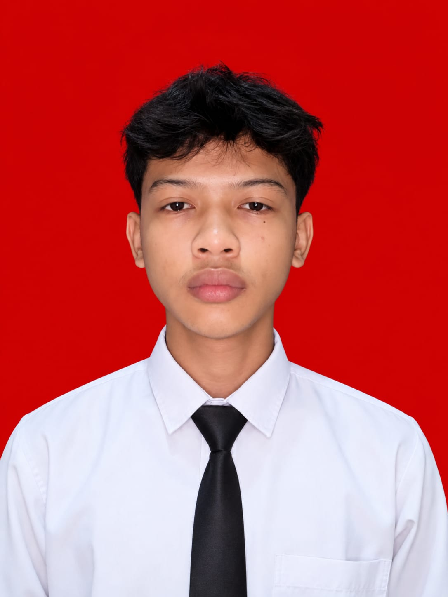
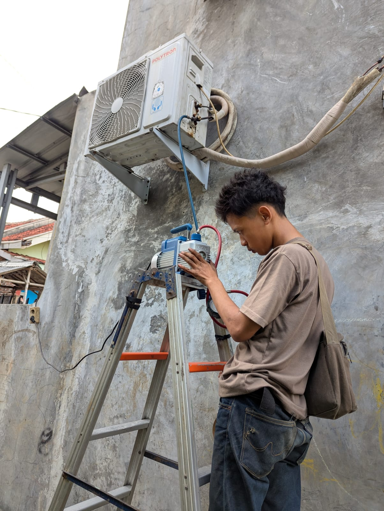
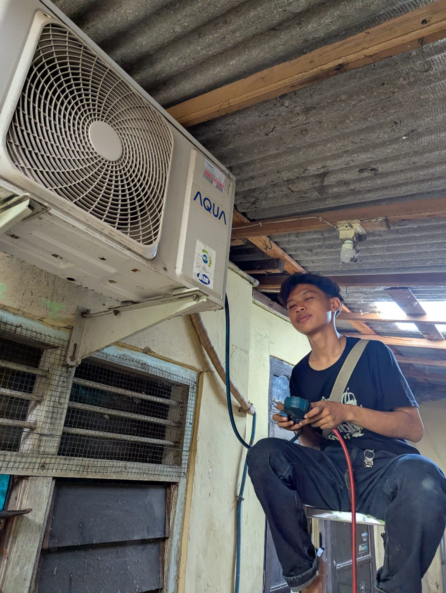
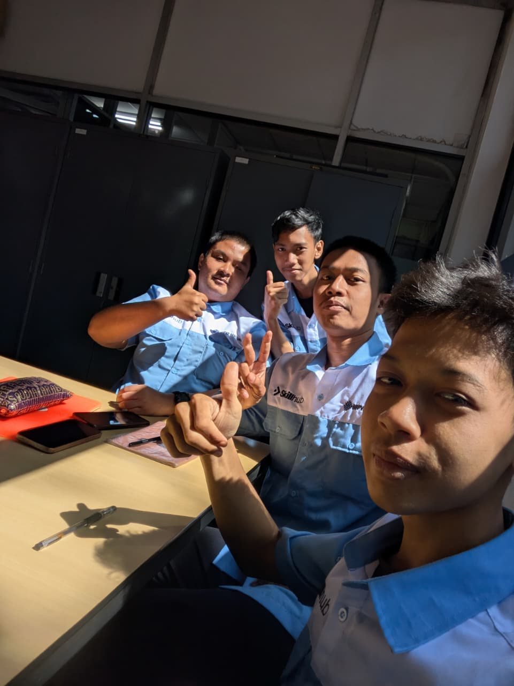
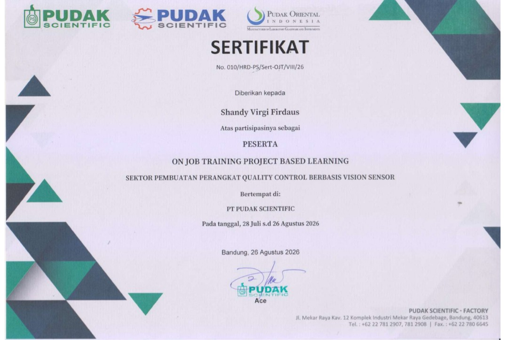
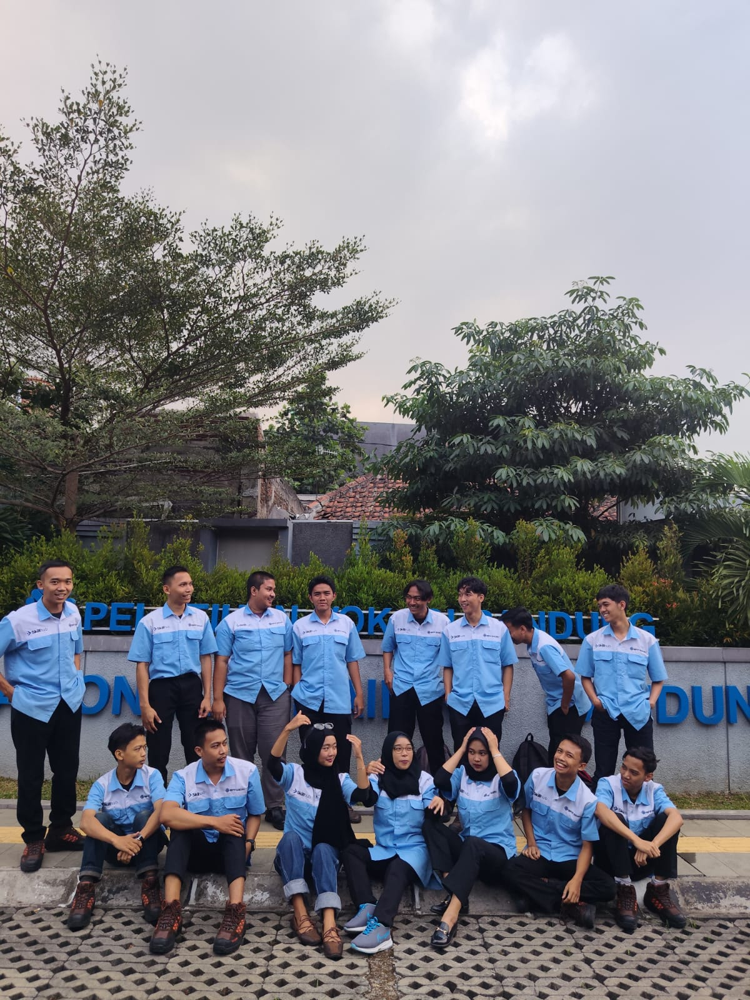

Fresh Graduate Teknik Mesin — spesialisasi perawatan HVAC, permesinan, dan sistem Quality Control berbasis Vision Sensor.
Berbasis di Karawang, Jawa Barat. Terbiasa bekerja dengan prosedur preventive maintenance, keselamatan kerja, dan integrasi sistem deteksi otomatis untuk lini produksi.
Lulusan Teknik Mesin dari SMK Indonesia Mas dengan pengalaman langsung di lapangan — mulai dari perawatan sistem HVAC di industri, hingga membangun perangkat Quality Control berbasis Vision Sensor menggunakan kamera dan Raspberry Pi.
Saya terbiasa bekerja dengan mesin bubut, prosedur perawatan mesin industri, dan instalasi sistem HVAC — dikombinasikan dengan ketertarikan pada otomasi dan sistem deteksi berbasis sensor visual. Pendekatan saya selalu berangkat dari kedisiplinan prosedur dan keselamatan kerja.

Menangani pemeliharaan dan perbaikan sistem HVAC secara langsung di lapangan, menerapkan prosedur preventive maintenance dan keselamatan kerja pada setiap penugasan.


Mendukung tim maintenance dalam instalasi dan pemeliharaan sistem HVAC, mempelajari alur kerja perawatan mesin industri secara langsung.
Mengembangkan perangkat Quality Control berbasis Vision Sensor menggunakan kamera, Raspberry Pi 4, dan Python. Bagian dari program Vokasi Nasional dengan sertifikat magang.


Kerja bangku, gambar teknik, AutoCAD, 3D printing, inventory, dan Quality Control berbasis Vision Sensor — bersertifikat KEMNAKER.

Perangkat Quality Control berbasis kamera dan Raspberry Pi 4 yang dikembangkan selama On Job Training di PT Pudak Scientific. Sistem ini mendeteksi dan memverifikasi kualitas objek secara otomatis menggunakan pemrosesan citra, menggantikan pemeriksaan manual yang lebih rentan terhadap human error.
Pemeliharaan dan instalasi sistem HVAC, troubleshooting lapangan, prosedur preventive maintenance.
Pengoperasian mesin bubut, kerja bangku, perawatan mesin industri.
Gambar teknik manual dan AutoCAD, termasuk dasar 3D printing.
Pengembangan sistem deteksi kualitas berbasis kamera, Raspberry Pi 4, dan Python.
Penerapan prosedur K3 dan preventive maintenance secara konsisten di setiap penugasan.
Pengelolaan dan pencatatan inventaris peralatan kerja.
Terbuka untuk peran di bidang Mechanical, Maintenance, HVAC, Manufacturing, dan Quality Control — khususnya posisi yang menggabungkan keterampilan permesinan konvensional dengan sistem deteksi dan otomasi berbasis sensor.
Terbuka untuk peluang kerja maupun diskusi seputar maintenance, HVAC, dan sistem Quality Control.